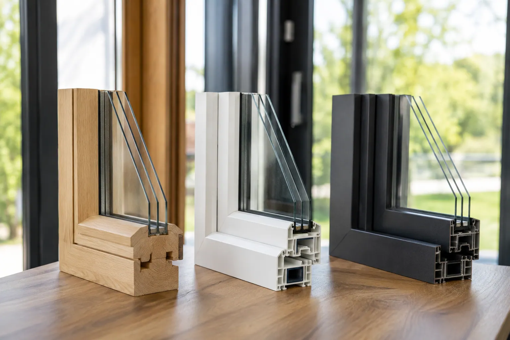

Un comparatif clair entre PVC, aluminium, bois et mixte pour choisir selon budget, style, entretien et performances.
Le vitrage doit être choisi selon la pièce, l'altitude, le bruit et la luminosité.
Ces valeurs aident à comprendre l'isolation, les apports solaires et la lumière naturelle.
Une bonne fenêtre mal posée perd une grande partie de son intérêt.
Matériau, vitrage, dépose, habillage et garanties doivent être lisibles sur le devis.
Chaque matériau a une vraie logique d'usage
Le PVC est souvent choisi pour son rapport performance/prix et son entretien simple. L'aluminium est apprécié pour les profils fins, les grands formats et les couleurs. Le bois reste chaleureux et adapté à certains bâtiments de caractère, mais demande plus d'entretien. Le mixte bois-aluminium vise le meilleur des deux mondes: chaleur intérieure et protection extérieure.
Comparatif simple
| Matériau | À privilégier si... | Point de vigilance |
|---|---|---|
| PVC | Vous cherchez un budget maîtrisé, une bonne isolation et peu d'entretien. | Les profils peuvent être plus épais ; sur très grands formats, il faut vérifier la rigidité et le clair de jour. |
| Aluminium | Vous avez de grandes baies, un style contemporain, une couleur précise ou un besoin de profils fins. | Le prix est souvent plus élevé ; il faut vérifier la rupture de pont thermique et la performance Uw complète. |
| Bois | Vous rénovez une maison de caractère ou vous cherchez un rendu chaleureux à l'intérieur. | L'entretien régulier est à anticiper, surtout sur les façades exposées à la pluie, au soleil ou au gel. |
| Mixte bois-aluminium | Vous voulez le rendu du bois côté intérieur avec une protection aluminium côté extérieur. | C'est souvent la solution la plus premium ; elle doit être justifiée par le niveau de finition attendu. |
Le bon choix n'est donc pas seulement une question de goût. Il dépend du format des ouvertures, du style de façade, du budget, de l'exposition et du niveau d'entretien que vous acceptez sur la durée.
Le vrai arbitrage : façade, usage et cohérence
Une maison contemporaine avec grandes baies ne pose pas les mêmes questions qu'une ferme rénovée ou qu'un appartement en copropriété. Le matériau doit rester cohérent avec la façade, le PLU, l'exposition et le niveau d'entretien accepté.
Les questions que se posent souvent les particuliers
- Le bois isole-t-il mieux ?Il peut être très performant, mais la performance finale dépend aussi du vitrage, de la fabrication et de la pose.
- L'aluminium est-il froid ?Les menuiseries aluminium modernes utilisent des ruptures de pont thermique. Il faut lire les valeurs Uw et ne pas se fier aux anciennes idées reçues.
- Peut-on mélanger PVC et aluminium ?Oui, si les couleurs, les proportions et les lignes de façade restent cohérentes depuis l'extérieur.
- Quel matériau choisir pour une grande baie ?L'aluminium est souvent pertinent pour les grands formats, mais le devis doit préciser le vitrage, le seuil, la pose et la performance complète.
Quel matériau selon la pièce ?
Dans une chambre ou un bureau, le PVC peut être très cohérent si l'objectif principal est l'isolation et le budget. Dans un séjour avec grande baie, l'aluminium apporte souvent plus de finesse et de lumière. Sur une façade ancienne ou une rénovation de caractère, le bois ou le mixte peuvent mieux respecter l'esprit du bâti. Le bon choix n'est donc pas forcément uniforme sur toute la maison. On peut mixer les matériaux si les couleurs, les proportions et les lignes restent cohérentes depuis l'extérieur. Vous hésitez entre plusieurs matériaux ? La façade, le budget, le vitrage et l'entretien réel doivent être comparés ensemble.
La bonne matière dépend de la pièce et de la façade
PVC, aluminium, bois ou mixte : aucun matériau n’est meilleur partout. Le bon arbitrage se fait selon dimensions, budget, style de maison, entretien accepté et performance attendue.
- PVC - Bon rapport isolation-prix : Il convient souvent aux fenêtres classiques et aux budgets maîtrisés, avec peu d’entretien.
- Aluminium - Pertinent pour les grands formats : Ses profils plus fins et sa rigidité sont utiles sur les baies, coulissants et façades contemporaines.
- Bois ou mixte - À choisir pour rendu et exigence : Le bois apporte une chaleur visuelle, le mixte limite l’entretien extérieur tout en gardant un intérieur plus noble.
- Service-Public.fr - remplacement de fenêtres, volets ou portesCette fiche confirme qu’une déclaration préalable est nécessaire quand le remplacement change l’aspect extérieur du bâtiment.
- Service-Public.fr - travaux en copropriétéCette fiche rappelle que certains travaux privatifs doivent être autorisés s’ils touchent l’aspect extérieur ou des parties communes.
- Service-Public.fr - travaux extérieurs d’une maisonCette fiche sert de repère pour vérifier les cas où une autorisation d’urbanisme peut être demandée.
- France Rénov’ - MaPrimeRénov’ par gesteCette page précise les conditions principales : logement, revenus, travaux, entreprise RGE et cumul possible avec d’autres aides.
- France Rénov’ - rénovation d’ampleurCette page explique le cas d’une rénovation globale, avec gain énergétique et accompagnement obligatoire.
- France Rénov’ - certificats d’économies d’énergieCette page explique les primes CEE, souvent à comparer avec MaPrimeRénov’ et l’éco-prêt à taux zéro.